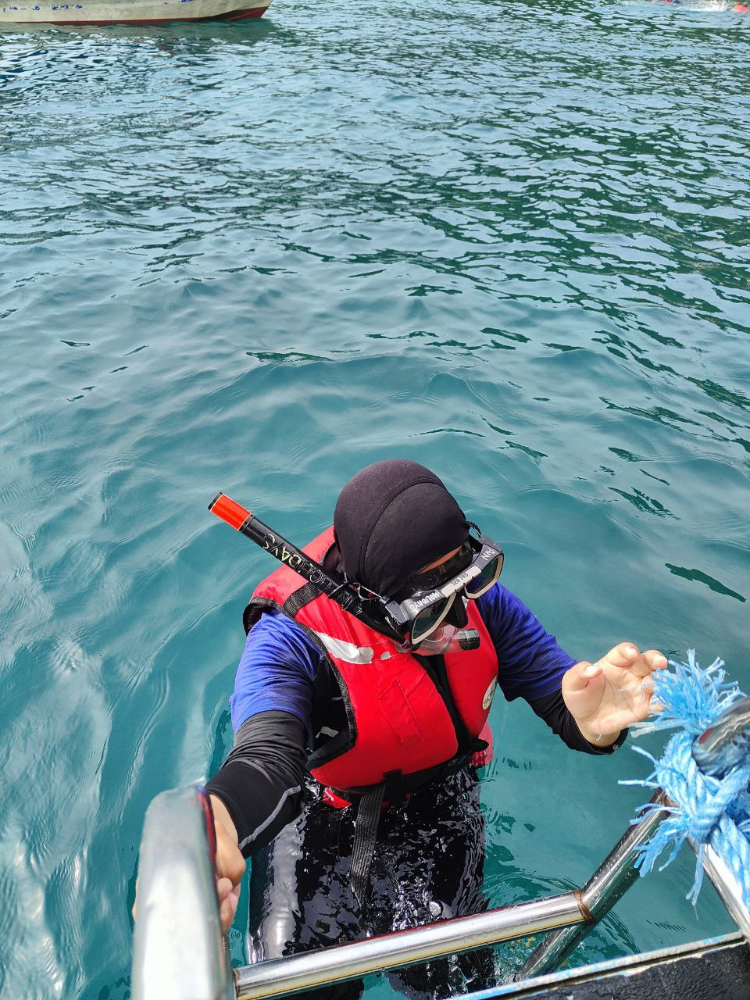
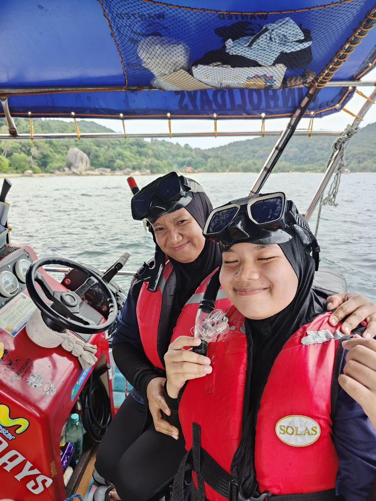

<!DOCTYPE html>
<html>

<html>
<body style="background-color:#cceeff;">

</body>
</html>

<head>
    <title>Page 4</title>
    </head>
  <body>

   <h1 style="color:tomato;"> WELCOME TO MY EXPERIENCE SPACE</h1>
    <p style="color:red;">Thank you for visiting my website.</p>

	<header> 
   <nav> 
  <table border="0" width="1350">
  <tr>  
          <th style="background-color:#eea29a;"><a href="Qindex.html">
	  <p style="color:white";>Home page</p></a></th>

    	  <th style="background-color:#eea29a;"><a href="Qbiodata.html">
	  <p style="color:white";>Biodata</p></a></th>
	  <th style="background-color:#eea29a;"><a href="Qeducation.html">
	  <p style="color:white";>Education</p></a></th>

	 <th style="background-color:#eea29a;"><a href="Qexperience.html">
	  <p style="color:white";>Experience</p></a></th>
	
	 <th style="background-color:#eea29a;"><a href="Qfamily.html">
	  <p style="color:white";>Family</p></a></th>

	 <th style="background-color:#eea29a;"><a href="Qgallery.html">
	  <p style="color:white";>Gallery</p></a></th>

	  </tr>
	  </table>
    </nav>
</header>


     <center>

<h2 style="color:black;">Experience</h2>
<p style="color:black;">Snorkeling at Perhentian Island Terengganu:</p>



<p></p>

<p></p>
     </center>

<p style="color:black;">Here some picture of me during snorkeling at Perhentian Island. Snorkelling allows people to glimpse the underwater world. 
Largely unexplored, the ocean, especially around the coastal areas, is full of
life. The abundance and variety of colour and creatures are simply staggering. 
Snorkelling allows people to witness the wildlife, in its natural habitat, 
much like going on a safari.</p>

<p style="color:black;">But the truth is that while snorkeling is a very enjoyable and 
easy sport, without some basic skills, good equipment, and knowledge about 
the dangers and conditions of the ocean, a first-time snorkeling experience 
can be a bit miserable, scary, and potentially dangerous.</p>

<h2>Dos and Don’ts for first time snorkelers</h2>

<ul>
  <li>Don’t touch the coral.</li>
  <li>Use biodegradable sunscreen.</li>
  <li>Don’t interfere with the sea creatures.</li>
  <li>Don’t take anything home with you.</p>
</ul> 

</html>
</body>